Tesseract CAD for Android
Download the app (APK)- Android app that works fully offline
- Check for updates button on the home screen
- Open DWG/DXF from WhatsApp, Files or Gmail straight into the app
- Share DWG, DXF and PDF straight to WhatsApp
Installing: open the downloaded file. Android asks once to allow installing apps from your browser or Files app; allow it, then tap Install.
Updates: tap Check for updates at the bottom of the app's home screen. The app asks before going online; your drawings never leave the phone.
Developed by Tesseract Studio · tools@tesseractstudio.co · Open the web version
Signing certificate SHA-256: 7F:18:97:2B:07:B1:93:6D:4F:D6:ED:DB:25:97:5C:25:2E:A7:0D:D8:70:39:0B:24:E2:C6:67:63:7D:96:CB:BB